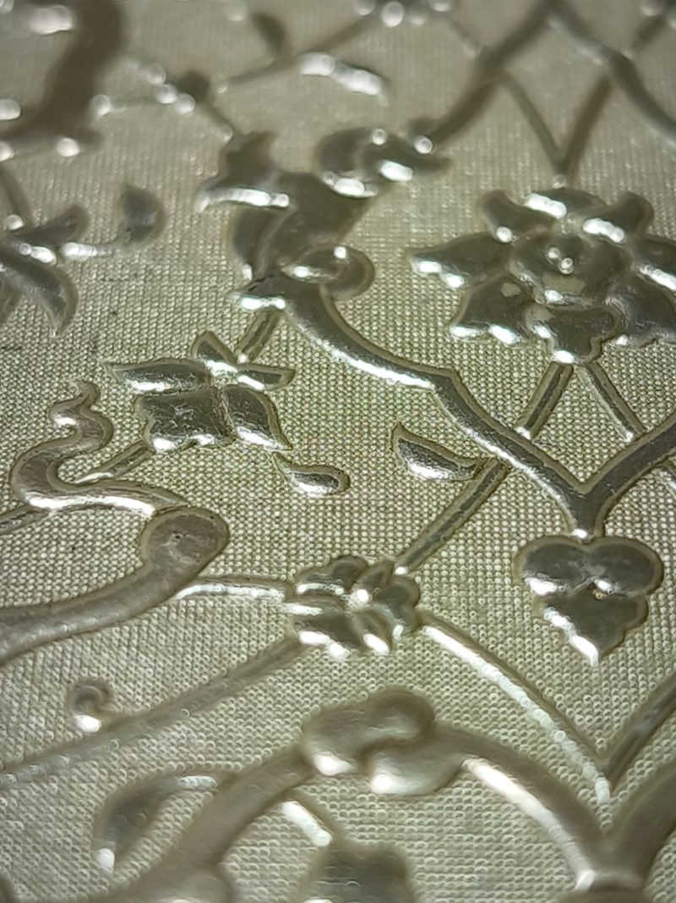

01ناشرو الكتب الدينية والتراثية
أغلفة المصاحف والكتب الدينية، حواف مذهّبة، زخارف كلاسيكية، ننتجها لكبرى دور النشر في تركيا منذ أربعة عقود.
دار تجليد جلدي من الجيل الثاني في إسطنبول، منذ عام 1978.

أغلفة المصاحف والكتب الدينية، حواف مذهّبة، زخارف كلاسيكية، ننتجها لكبرى دور النشر في تركيا منذ أربعة عقود.

أغلفة جلدية بنقش بارز عميق، وعلب واقية وصناديق صدفية للطبعات المحدودة والمرقّمة.

تصاميم صناديق أصلية بهيئة كتاب مع دواخل مقصوصة بالليزر تناسب المحتوى تمامًا.

ليست المحركات ما يدير مكابسنا، بل يد الحِرفي. تلك اليد تقرأ كل زخرفة وهي تضغط، فيتشكّل الجلد بعمق يصل إلى 2 مم، عمقٌ لم تبلغه خطوط الإنتاج الآلية يومًا، ولا يُبلغ إلا بالصبر.
ولإسطنبول ميزة هادئة تضيفها إلى هذا العمل: الحِرفية اليدوية نفسها، والصبر نفسه، بأسعار تقل بوضوح عن أسعار دور التجليد في أوروبا الغربية.
اكتشف الحِرفةعينات جلد، غلاف منقوش وصندوق صدفي مصغّر، على مكتبك عبر DHL خلال 2–4 أيام.